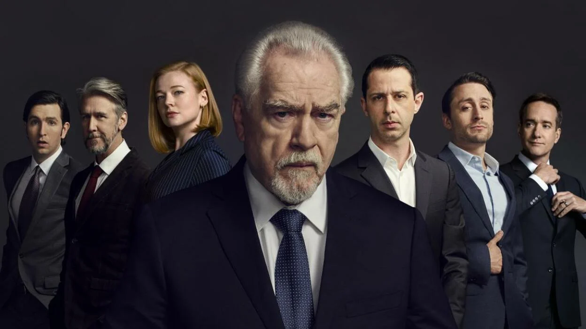

About
Succession is the story of a partiarchal mutli-billionaire family. The head of the family is a brash, brutal old man with declining health, who toys with his children as to who will essentailly inherit his role as CEO for his company. Logan Roy, the father, flits between being in full control of the company, to stepping back as just a shareholder. His changing presence and dramatic decline of his health leaves a fluctuating void of power that pulls in his three (four) children, son-in-law and great-nephew, as well as rival companies circling the corporate waters like sharks. Succession's primary writer is Jesse Armstrong, who is most known for writing Peep Show, a staple of British comedy.